Москва, ул. Дот д.21
Презентация ДОТ
Вход по спискам
+7 (921) 221-21-21

21/01
19:00
-
20:00
Москва, ул. Дот д.21
Презентация ДОТ
Вход по спискам
+7 (921) 221-21-21
Бесконечное множество гаджетов теперь можно хранить в одном надежном, беопасном месте. Можно забыть о тяжелом рюкзаке, о проблеме отсутствия карманов на некоторой одежде. Также безопасность ваших устройств обеспечивается надежной защитой от краж.
«Мал, да удал» – вот, что можно сказать о браслете «ДОТ». Он может вместить в себя любой персональный гаджет, начиная с телефона и заканчивая Вашим персональным компьютером. С нашим устройством Вы можете взять все необходимые гаджеты с собой, независимо от их габаритов.
Устройства находятся под защитой: доступ к ним можно получить по отпечатку пальца. Также браслет поддерживает заряженность аккумуляторов: благодаря этой функции необходимости носить с собой зарядный блок тоже не возникнет.